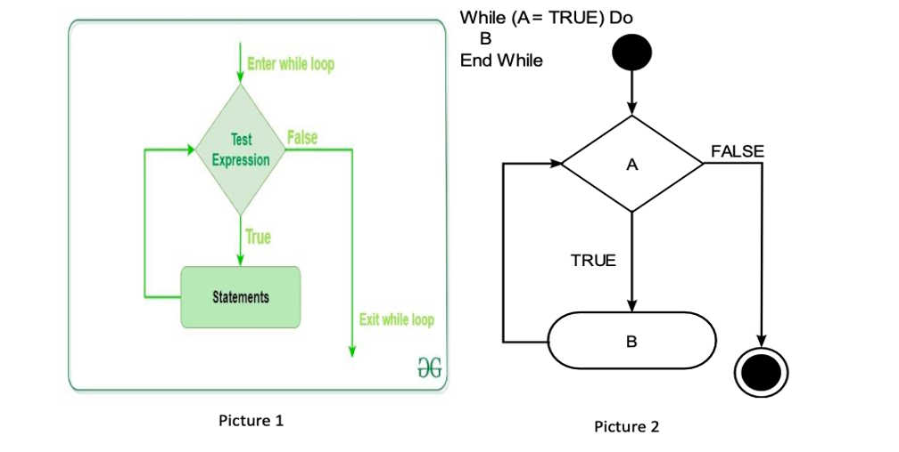
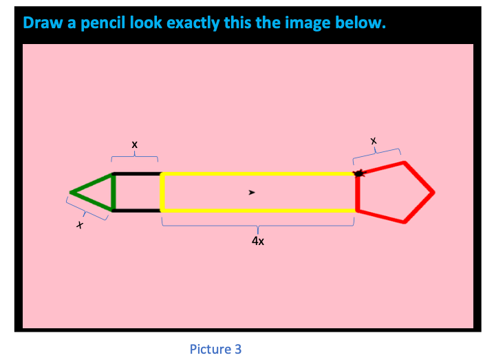

5. Let's go to the while loop.
This level 4 will teach you how to write a “while loop”, print out statements and will provide you additional practices with using a while loop. There are 2 parts in this level. :
- Part 1: contains the definition, example and a simple task to practice constructing a while loop.
- Part 2: advanced practice constructing the while loop by drawing a worm.
First, let's take a look at how while loop work
-
Get started with the "while loop":
- Purpose of the while loop: The while loop is initiated with the keyword while, followed by a looping condition. The instructions in the loop block are repeated as long as the condition is fulfilled. The program then continues on with the next statement listed after the loop block.
- Print statement: simply print out what is in the command.
While loop Printing statement n = a
while n < c:
code chunk
n = n + b
In this chapter, "a" will always be 0 and "b" will be 1.
print("statement") -
Important information for using a "while loop":
- The picture 2 is the pseudocode (a general guide to code a while loop) and explanation for the picture 1. ‘A’ in the picture 2 is the ‘test expression’ in picture 1, ‘B’ in picture 2 is equal to “statements” in picture 1. In both pictures, they are trying to say that in a while loop whenever the “test expression” is TRUE, then the while loop will process to the statements, and if the “test expression” is FALSE, then the loop will automatically be ended. In other words, you will automatically be exited from the while loop.
- Explanation in the general while loop:
- “n = a”: ”a” should be an integer. This line of code is used for assigning purpose, here, we assign “n” with “a”.
- “c” : an integer that is larger than “n”. Since “n” is equal to “a” , therefore, “c” is larger than “a”.
- Important to know: “c” will always be larger than “n” (this is the condition), therefore, once “c” is smaller than “n”, the while loop will automatically be exited and return the result(s).
- “b” : can be any integer numbers.
- Code chunk: This is a chunk of code; you will replace the words “code chunk” by the command(s) that you want to be repeated when the conditions are satisfied.
- Important: the condition here is “n” < “c”.
- In only this chapter, the while loop has “n = n + b”. This line of code indicates that in a while loop you will need to keep track of your “n”. Different purposes of different programs will have different ways to construct the while loop. :
- The while loop is different from the for loop. It will not automatically stop if “n” always satisfies the conditions. Therefore, we must keep track of “n” and at a point, “n” will be larger than “c” and that is when the condition(s) will be unsatisfied, and the while loop will immediately be exited.
-
Using printing statement:
- “print(“statement”)”: this function will print out everything in the “statement”.
- Example:
Printing statement: Output: print("Hello, world !") Hello, world ! -
Example combines both “while loop” and printing command: Print out the word “hello” for 4 times
The while loop is Out put n = 0
while n < 4:
print("hello")
n = n + 1hello
hello
hello
hello
Explanation for example above:
- “n” started at 0 as “n = 0”, since 0 < 4, therefore, the while loop will give out 1 output, which is the word “hello”. Then “n” will be added 1 through the line of code “n=n +1”, so now “n” is equal to 1.
- After the first run, “n=1” and 1 < 4 , therefore, the while loop will give out another “hello” output. ”. Then “n will be added 1 through the line of code “n=n +1”, so now “n” is equal to 2.
- After the second run, “n=2” and 2 < 4 , therefore, the while loop will give out another “hello” output. ”. Then “n” will be added 1 through the line of code “n=n +1”, so now “n” is equal to 3.
- After the third run, “n=3” and 3 < 4 , therefore, the while loop will give out another “hello” output. ”. Then “n” will be added 1 through the line of code “n=n +1”, so now “n” is equal to 4.
- o After the fourth run, “n=4” and 4=4, which no longer satisfy the condition “n < 4” , therefore, the while loop will automatically be exited. It then returns all the 4 “hello” outputs.
-
Exercise task: Practice using “while loop” and printing command.
Tasks: Please print out number from 0 to 9. Your expected output should look like this:
0
1
2
3
4
5
6
7
8
9Hints:
- In this exercise, what you have to print out is the "n"
- In order to print "n", Instead of using "print("statement"), please use "print(n)".
Instructions:
- "a" must be 0.
- In the first line of the while loop, notice that you will have to print out number from 0 to 9, so there are 10 number (including both 0 and 9), so the while loop will have to run for 10 times. Based on the hint that you should print out “n” in the box above, you should now know what the “c” in the general while loop is.
- Now, in the while loop, you should write out the print statement and increase n by a suitable number in order to print out the correct value at each time the loop runs.
-
Exercise: Draw a pencil:
Notice
- In this program, you will have have to write 2 while loops and 2 for loops:
- 2 while loops:
- Draw the triangle.
- Draw the square.
- 2 for loops:
- Draw the rectangle.
- Draw the pentagon.
Reminder: Through the first few chapters, you should have acknowledged the turtle’s default direction, for loop, while loopand some common commands. Here are what you have learnt
Purpose Command Import Python turtle graphic. import turtle Create a name for your turtle. name = turtle.Turtle() Choosing a shape.
if you skip the command choosing a shape for your turtle then your turtle shape will automatically be an arrow.name.shape(‘shape’)
You have to replace ‘shape’ by one of these shapes: arrow, circle, square, triangle or turtle.Choosing a color
if you skip the command choosing a color for your turtle then your turtle color will automatically be black.name.color(‘color’)
You have to replace ‘color’ by the color that you wish to.Setting a default location to (0,0) name.goto(0,0) Setting a background
If you don’t want to have background image for your turtle, please skip this part.Call the screen function. screen=turtle.Screen(). Set background to the picture that you like. screen.bgpic(“picture_file”)
Click to the image icon and look at 3 images that it contains. Replace ‘picture_file’ with the image file that you like.Movement commands Make the turtle goes forward in the current direction. turtle.forward(steps) Turns the turtle to the left direction in number degrees. turtle.left(degrees) Turns the turtle to the right direction in number degrees. turtle.right(degrees) Pointing a variable to an object. variable = object
The object can be in any type: integer, decimal, list, etc.Setting turtle pen to a color turtle. pencolor('color')
Replace ‘color’ by a color that you want.The general while loop is:
n = a
while n < c:
code chunk
n = n + bThe general for loop is:
for i inrange(i):
code chunk -
Instruction to draw the pencil:
- Set up the default position, name your turtle, set up a background (if you want to) for your turtle.
- Pick a length for all of your edges by using the similar syntax when you did for the square in the previous chapter. Notice that all the edges in the following shapes: the triangle, the square and the pentagon are the same, so you just have to pick a length (should be larger 50) for all of them. The width of the rectangle will be calculated later based on this length.
- Write a while loop that draws the green triangle.
- Before starting to write the while loop you have to turn your turtle to the left for 30 degrees.
- Set your turtle pen color to green.
- Now you can write your while loop
- "a" should be 0
- As you can see, there are 3 equal edges in the triangle, so the code that draw one edge must be run for 3 times and the total number of edges in the triangle will be your “c” in the general for loop.
- In the while loop, you will:
- Draw the line that form one edge of the triangle. You just have to write the command that makes the turtle go forward by the length that you have chosen. Notice that there are 2 ways to write this and you can use either method. Review the previous chapter if you don’t remember.
- Turn your turtle to the right for 120 degrees. You can look at the table above again if you forget how to do this.
- Increase the “n” by 1.
- Write a while loop that draws the square.
- Before drawing the square, you will have to move your turtle to a suitable location. You can follow the steps below:
- 1st step: Make your turtle goes forward by the length you have chosen in part a.
- 2nd step: Turn your turtle to the right for 30 degrees.
- Set your turtle pen color to black.
- Now you can write your while loop:
- "a" should be 0
- As you can see, there are 4 equal edges in the square, so the code that draw one edge must be run for 4 times and the total number of edges in the square will be your “c” in the general for loop.
- In the while loop, you will:
- Draw the line that form one edge of the square. You just have to write the command that makes the turtle go forward by the length that you have chosen. Notice that there are 2 ways to write this and you can use either method. Review the previous chapter if you don’t remember.
- Turn your turtle to the right for 90 degrees. You can look at the table above again if you forget how to do this.
- Increase the “n” by 1.
- Write the for loop that draws the rectangle:
- Before writing out the for loop, you need to move your turtle to suitable location. You can follow the step below:
- Make you turtle go forward by the length that you have chosen.
- Set your turtle pencolor to yellow
- Now you can write the for loop:
- 'i' in the general 'for loop' is the total number of edges that are equal to each other in the shape. For example, in the level 2, you have learnt how to draw the square by using a 'for loop', in a square, you have 4 equal edges, therefore, your 'i' is equal to 4 and the 'for loop' is 'for n in range(4):'. Now look at the rectangle, there are 2 pairs of edges that are equal to each other (2 widths and 2 heights), therefore, the total number of edges that are equal in each group is 2, so 'i' here must equal to 2.
- In the for loop you will:
- Draw the width of the rectangle by writing the command that makes the turtle go forward by the length you have chosen multiplied by 4.
- Turn your turtle to the right for 90 degrees.
- Draw the height of the rectangle by writing the command that makes the turtle go forward by the length you have chosen.
- Turn your turtle to the right for 90 degrees.
- Write the for loop that draws the pentagon:
- Before writing out the for loop, you need to move your turtle to suitable location. You can follow the step below:
- 1st step: Make your turtle goes forward by chosen length times 4.
- 2nd step: Turn your turtle to the left for 18 degrees.
- Set your turtle pencolor to red.
- Now you can write the for loop:
- Pentagon has 5 equal edges, therefore, your “i” should be 5.
- In the for loop you will:
- Draw the line that form one edge of the pentagon. You just have to write the command that makes the turtle go forward by the length that you have chosen.
- Turn your turtle to the right for 72 degrees.
You can write your while loop below.
# This solution will print out numbers from 0 to 9. Each number will lie on each line.
n = 0
while n < 10:
print(n)
n = n + 1
n = 0
while n < 10:
print(n)
n = n + 1
# run the example first
n = 0
while n < 4:
print("Hello")
n += 1
# write your code below:
You can wdraw your pencil below.
# This solution will draw out a pencil with length of 50.
sol = turtle.Turtle()
sol.shape("turtle")
sol.color("pink")
length = 50
sol.penup()
sol.goto(-200, 0)
sol.pendown()
sol.pencolor("green")
sol.left(30)
n = 0
while n < 3:
sol.forward(length)
sol.right(120)
n = n + 1
sol.forward(length)
sol.right(30)
sol.color("black")
n = 0
while n < 4:
sol.forward(length)
sol.right(120)
n = n + 1
sol.forward(length)
sol.pencolor("yellow")
for i in range(2):
sol.forward(length*4)
sol.right(90)
sol.forward(length)
sol.right(90)
sol.forward(length*4)
sol.left(18)
sol.pencolor("red")
for i in range(5):
sol.forward(length)
sol.right(72)
sol = turtle.Turtle()
sol.shape("turtle")
sol.color("pink")
length = 50
sol.penup()
sol.goto(-200, 0)
sol.pendown()
sol.pencolor("green")
sol.left(30)
n = 0
while n < 3:
sol.forward(length)
sol.right(120)
n = n + 1
sol.forward(length)
sol.right(30)
sol.color("black")
n = 0
while n < 4:
sol.forward(length)
sol.right(120)
n = n + 1
sol.forward(length)
sol.pencolor("yellow")
for i in range(2):
sol.forward(length*4)
sol.right(90)
sol.forward(length)
sol.right(90)
sol.forward(length*4)
sol.left(18)
sol.pencolor("red")
for i in range(5):
sol.forward(length)
sol.right(72)
from browser import document
import turtle
turtle.set_defaults(
turtle_canvas_wrapper = document['turtle-div1'])
# DO NOT DELETE ABOVE THIS LINE
######## Write your code below
name = turtle.Turtle()
name.shape("turtle")
name.color("red")
# DO NOT DELETE BELOW THIS LINE
turtle.done()
« Previous Next »